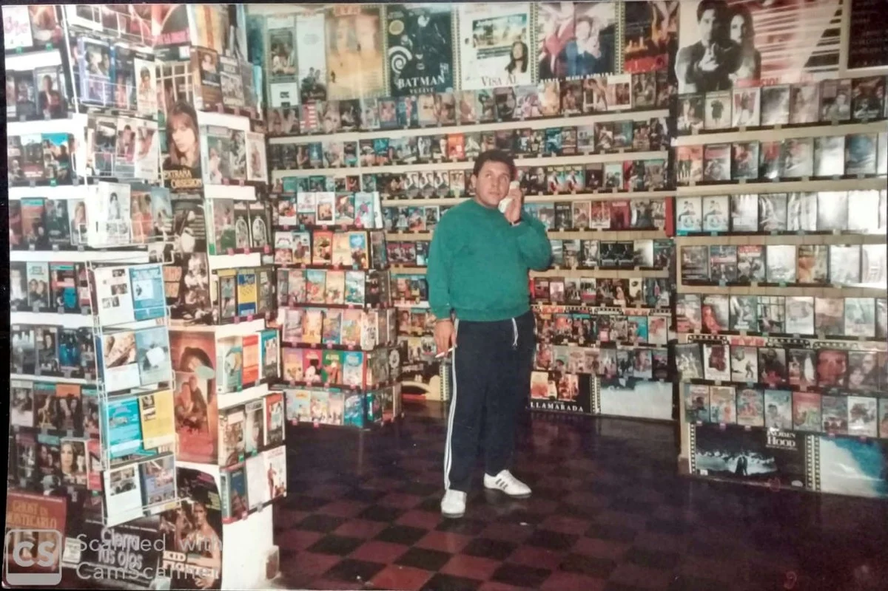

VideoClub Cocoon
Fundado en 1991 por Alberto Lareu, y su esposa, Yolanda Real Salas. Siempre fue un comercio reconocido del pueblo de Los Cardales, muy concurrido en su tiempo como VideoClub. Con la llegada de la tecnología, con empresas como Netflix, etc. Se vio obligado a mutar y forzar un cambio. Buscando ser un comercio dedicado a la venta de insumos tecnologicos, como celulares, consolas de videojuegos, accesorios, juegos, etc. Con el paso de los años, fuimos transformandonos hasta convertirnos en lo que realmente nos gusta y queremos ser, la bien conocida Libreria y Regaleria "Cocoon Cosas divertidas" Seguimos siendo un comercio familiar y planeamos seguir siendolo. Muchas gracias por elegirnos, esperamos verte pronto.